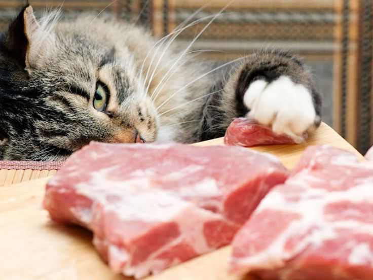

Leur habitat
 Les chats domestiques descendent des chats sauvages africains, mais leur habitat naturel est devenu beaucoup plus diversifié en raison de leur dispersion dans le monde entier en tant qu'animaux de compagnie. Cependant, leurs ancêtres sauvages, tels que le chat sauvage africain (Felis silvestris lybica), sont originaires d'Afrique subsaharienne et des régions du Moyen-Orient. Ces chats sauvages préfèrent des habitats variés tels que les savanes, les steppes, les forêts ouvertes et les zones rocheuses, où ils peuvent trouver des proies et se protéger des menaces. Ils sont de bons chasseurs et ont adapté leurs habitudes de chasse et leur comportement en fonction de leur environnement.
Les chats domestiques descendent des chats sauvages africains, mais leur habitat naturel est devenu beaucoup plus diversifié en raison de leur dispersion dans le monde entier en tant qu'animaux de compagnie. Cependant, leurs ancêtres sauvages, tels que le chat sauvage africain (Felis silvestris lybica), sont originaires d'Afrique subsaharienne et des régions du Moyen-Orient. Ces chats sauvages préfèrent des habitats variés tels que les savanes, les steppes, les forêts ouvertes et les zones rocheuses, où ils peuvent trouver des proies et se protéger des menaces. Ils sont de bons chasseurs et ont adapté leurs habitudes de chasse et leur comportement en fonction de leur environnement.
Caractéristiques physiques
 Les chats se caractérisent par des corps minces et musclés, des têtes proportionnées avec des museaux relativement courts, de grands yeux ronds, des oreilles mobiles et des griffes rétractiles sur leurs pattes. Leur pelage peut varier considérablement en longueur, couleur et motif, et ils peuvent avoir une grande variété de couleurs d'yeux. Ces caractéristiques physiques les rendent adaptés à la chasse, à l'escalade et à la vie à la fois en intérieur et en extérieur.
Les chats se caractérisent par des corps minces et musclés, des têtes proportionnées avec des museaux relativement courts, de grands yeux ronds, des oreilles mobiles et des griffes rétractiles sur leurs pattes. Leur pelage peut varier considérablement en longueur, couleur et motif, et ils peuvent avoir une grande variété de couleurs d'yeux. Ces caractéristiques physiques les rendent adaptés à la chasse, à l'escalade et à la vie à la fois en intérieur et en extérieur.
Comportement social

Les chats montrent un comportement social complexe, bien qu'ils soient généralement considérés comme des animaux indépendants. Quelques points clés incluent : Territorialité : Les chats sont territoriaux et marquent leur territoire avec des signaux odorants. Communication : Ils utilisent une variété de signaux, y compris des miaulements, des grognements et le langage corporel. Toilettage : Ils se consacrent au toilettage quotidien, à la fois pour rester propres et pour renforcer les liens sociaux. Jeu social : Ils peuvent jouer entre eux ou avec des humains, montrant confiance et affection. Hiérarchie sociale : Dans les groupes de chats, des hiérarchies sociales peuvent émerger, bien que de manière fluide. Liens avec les humains : Les chats domestiques peuvent développer des liens affectifs forts avec leurs propriétaires humains, recherchant le contact physique et l'interaction. En bref, les chats peuvent montrer un comportement social riche et varié, à la fois avec d'autres chats et avec les humains, bien qu'ils maintiennent leur indépendance en tant que partie intégrante de leur nature.
Que mangent-ils
Les chats sont des carnivores stricts, ce qui signifie que leur alimentation naturelle est principalement composée de viande. Les aliments que les chats mangent comprennent : Viande : La viande fraîche ou crue est une partie essentielle de l'alimentation d'un chat. Ils peuvent manger de la viande de bœuf, de poulet, de dinde, d'agneau et d'autres types de viande. Poisson : Certains chats aiment le poisson, qui peut être une source de protéines et d'acides gras oméga-3. Cependant, le poisson ne devrait pas constituer la majeure partie de leur alimentation en raison du risque de toxicité au mercure et de déséquilibres nutritionnels. Aliments commerciaux pour chats : Il existe des aliments secs et humides formulés spécifiquement pour les besoins nutritionnels des chats. Ces aliments peuvent contenir de la viande, du poisson, des vitamines, des minéraux et d'autres nutriments essentiels. Alimentation maison : Certains propriétaires choisissent de préparer les repas de leurs chats à la maison, en veillant à inclure une proportion adéquate de protéines, de graisses, de glucides, de vitamines et de minéraux. Il est important de noter que les chats ont des besoins nutritionnels spécifiques et ne peuvent pas survivre longtemps sans une alimentation équilibrée. Il est toujours recommandé de consulter un vétérinaire pour déterminer la meilleure alimentation pour son chat et s'assurer qu'il reçoit tous les nutriments dont il a besoin.